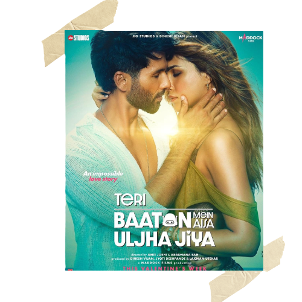

|  |
Teri Baaton Mein Aisa Uljha JiyaAryan meets a young woman Sifra and the two fall in love with each other. Aryan, deciding to introduce Sifra to his family, gets into trouble as he learns that Sifra is a humanoid android robot. CastShahid Kapoor, Kriti Sanon Directed byAmit Joshi, Aradhana Sah Music BySachin Jigar, Tanishk Bagchi, Sachin Jigar, Mitraz |